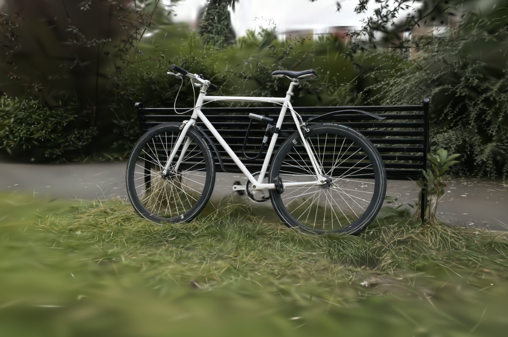

INTERACTIVE PAPER COMPANION
Explore the reconstruction.
Move through the decoded results of our compaction and compression pipeline.

These are the actual decoded PLYs from the combined C18.3 + E19 experiment. The camera stays in place when you switch compaction targets.
The browser renders the reconstructed scenes; it does not run our encoder. The PLY download size differs from the E19 compressed package size. Quality scores are averages from the canonical benchmark, not measurements of this browser view.
Artifact provenance & viewing notes
All source PLY attributes are retained in the downloadable files. Byte chunks are reassembled without conversion or additional quantization and checked against their SHA-256 hashes. The 64k, 256k and 1.024M labels are requested compaction targets; square-grid fitting slightly reduces the final counts. Browser rendering can differ from the paper's GraphDECO renderer.
The 1.024M result downloads about 253 MB and needs more GPU memory. The full original scene is not included in this initial gallery. Artifact identities are recorded in the manifest.
Viewer: PlayCanvas 2.23.3, MIT licensed. Engine license · Project license.